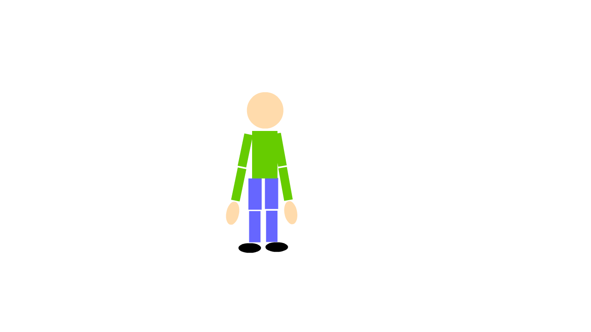

Rigging Animation ProjectRigging in Adobe Animate employs the Bone Tool, enabling intricate and lifelike character movements. This technique uses a series of connected segments that mimic bones to represent and manage the motion of objects or their components. The purpose of this project is to demonstrate a basic character performing an animation, in this case jumping jacks. As I do not possess a graphics drawing tablet, I was restricted to designing a rather simplistic character. This animation serves as a straightforward introduction to character animation for beginners.  |